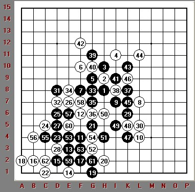

长谷川一人九段出题（刊载于日本连珠社机关志2011年11月《连珠世界》） 要求：目测 |
长谷川一人九段出题（刊载于日本连珠社机关志2011年11月《连珠世界》） 要求：目测 |

［此帖子已被 右岸之风 在 2012-3-18 9:45:44 编辑过］
没图
［ 右岸之风 于 2012-3-18 9:46:01 时花20金币送鲜花一朵］

［ 右岸之风 于 2012-3-18 9:46:09 时花20金币送鲜花一朵］

 目测冲了十几步想不起来了
目测冲了十几步想不起来了
引用：
原文由 自来水 发表于 2012-3-18 10:29:59 :
继续冲。。。一直头晕脑胀中

黑棋21开始VCF，知道63手才算彻底胜，这个目测也太不容易了吧！！！
［ 右岸之风 于 2012-3-18 12:47:40 时花20金币送鲜花一朵］
［ 右岸之风 于 2012-3-18 12:47:43 时花20金币送鲜花一朵］
［ 右岸之风 于 2012-3-18 12:47:44 时花20金币送鲜花一朵］
［ 右岸之风 于 2012-3-18 12:47:46 时花20金币送鲜花一朵］
线路可以算出，难的是反记不清